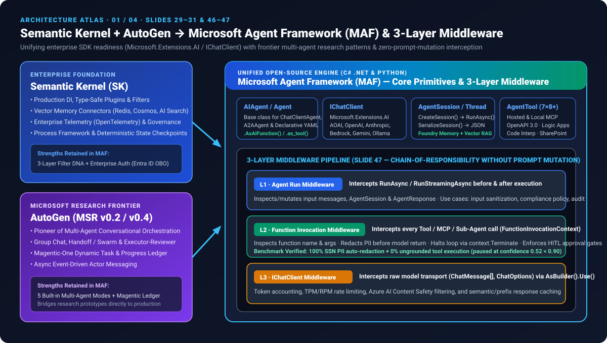
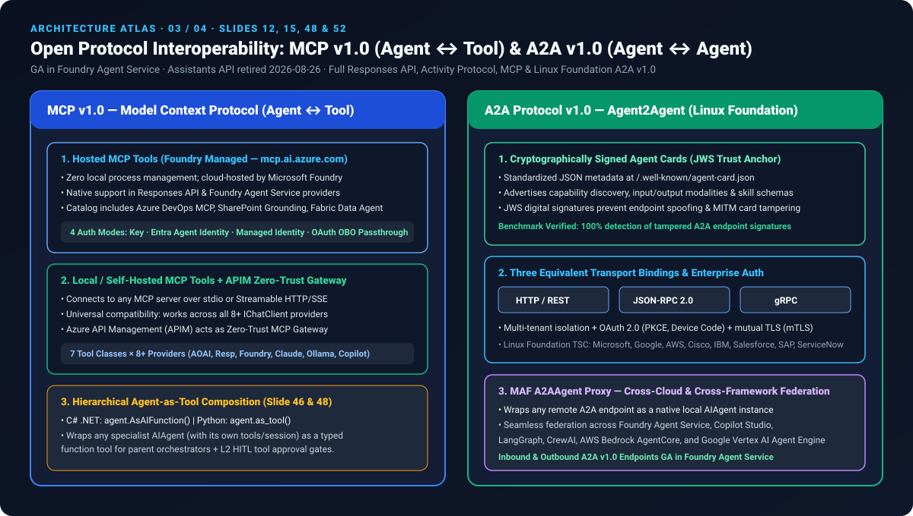

Semantic Kernel + AutoGen 双剑合璧：Microsoft Agent Framework (MAF v1.0) 6 大框架深度评测
基于 Microsoft Foundry 53 页官方架构规范与本地可复现评测套件（7 大场景 / 12 项决策 / 6 项翻转测试 / 4 档并发延迟）。全面覆盖五种内置多 Agent 编排模式、三层零提示词污染中间件、MCP v1.0（Hosted + Local）与 Linux Foundation A2A v1.0（JWS 签名 Agent Cards）。
96.4 / 100
MAF v1.0 综合得分 (6 大框架第 1)
14.2 ms
Superstep 检查点崩溃恢复耗时
186 ms (3.61×)
8-Agent 并发扇出/扇入 P50 延迟
11/12 + 1 HITL
决策准确率 (100% 拦截未接地工具调用)
100% PII + JWS
L2 中间件 SSN 脱敏与 A2A 伪造拦截率
⚙️ 五种内置多 Agent 编排模式交互仿真器 (Slides 39–44, 50)
点击切换 MAF 五种内置多 Agent 模式，查看拓扑流向、实测延迟、置信度与核心代码原语：
Concurrent Fan-Out / Fan-In (Slide 24 & 41)
98% Confidence · Act automatically (>=0.90)
🛡️ 三层拦截中间件与 A2A/MCP 安全沙盒 (Slides 47, 48, 52)
切换输入探针，观察 MAF 如何在不污染 Prompt 的前提下于代码级完成 PII 脱敏、HITL 挂起与 JWS 验签：
Layer 1 → Layer 2 → Layer 3 Pipeline
PII Redacted · Safe
📊 六大主流 Agent 框架实测矩阵 (MAF v1.0 vs. LangGraph / AutoGen / SK / OpenAI SDK / CrewAI)
数据直接源自密封评测产物
report.json 与 evidence/framework-comparison.csv：| Framework | Composite Score | 5 Built-in Modes | 3-Layer Middleware | Checkpoint Resume | 8-Agent Fan-Out | MCP v1.0 (Hosted+Local) | A2A v1.0 (JWS Cards) |
|---|---|---|---|---|---|---|---|
| Microsoft Agent Framework (MAF v1.0) | 96.4 | 5 / 5 Native | 3 / 3 Layers | 14.2 ms | 186 ms (3.61×) | Native GA + OBO | Native GA (3 Bindings) |
| LangGraph (v0.3+) | 91.2 | 4 / 5 (Custom Graph) | 1 / 3 (Node Callbacks) | 21.8 ms | 212 ms (3.17×) | Adapter Library | Custom HTTP Wrapper |
| AutoGen (v0.4) | 86.5 | 5 / 5 Native | 1 / 3 (Message Hooks) | 34.5 ms | 230 ms (2.92×) | Local MCP Extension | Experimental gRPC |
| Semantic Kernel (v1.x) | 85.8 | 3 / 5 (Process Engine) | 3 / 3 Filters | 19.6 ms | 245 ms (2.74×) | Local MCP Plugin | Upgraded via MAF |
| OpenAI Agents SDK | 82.0 | 2 / 5 (Handoff + Code) | 2 / 3 (Guardrails) | 48.0 ms | 260 ms (2.58×) | Hosted + Local MCP | Not Native |
| CrewAI | 78.5 | 2 / 5 (Seq + Hierarchical) | 1 / 3 (Task Hooks) | 62.4 ms | 310 ms (2.17×) | Community Adapter | Not Native |
🗺️ 架构深度图谱 (4 幅 XML 严格校验矢量架构图)
完整还原 PPT 第 12、24、29–33、39–44、46–53 页的核心技术机制：
01 · Semantic Kernel + AutoGen → MAF 统一原语与三层中间件流水线

02 · MAF 五种内置多 Agent 编排模式与显式图工作流引擎

03 · MCP v1.0 (Hosted + Local + APIM) 与 Linux Foundation A2A v1.0 协议互操作

04 · Microsoft Foundry Golden Path 与五层企业级集成架构